CPU、GPU 和 SIMT 编程模型：从指令级并行到海量线程
课程：2026 春季学期《操作系统原理》
讲师：蒋炎岩（jyy）
官方课程主页：https://jyywiki.cn/OS/2026/
官方讲义：https://jyywiki.cn/OS/2026/lect20.md
视频来源：Bilibili BV1df536aEMk
版权说明：课程讲义与幻灯片归蒋炎岩所有，采用 Creative Commons BY-NC 4.0 许可；本电子书是对课堂讲授的书面化重构，保留出处与许可说明。
导语：从 CPU 上的并发走向另一种计算模型
(参考时间: 00:00)
前几讲的主题都可以由同一个核心概念统一起来：计算图。
- 互斥和同步控制节点之间的依赖；
- 协程与 goroutine 降低轻量节点的创建成本；
- Promise 与
async/await在语言层描述动态计算图； - 这些机制仍然运行在 CPU 上。
这一讲要推翻“计算只能由通用 CPU 完成”的默认假设：
如果 CPU 的动态调度和指令控制已经消耗了太多能量，能否通过 SIMD 或大量更简单的执行单元，提高单位功耗的计算能力？
课程沿着两条历史线展开：
- CPU 内部的指令级并行与 SIMD 扩展；
- 从游戏机图形处理器、Shader、GPGPU 到 CUDA/SIMT。
flowchart LR
A["计算图"] --> B["CPU 并发模型"]
B --> C["指令级并行 ILP"]
B --> D["SIMD"]
B --> E["多核 / 异构处理器"]
E --> F["GPU"]
F --> G["Shader"]
G --> H["GPGPU"]
H --> I["CUDA / SIMT"]
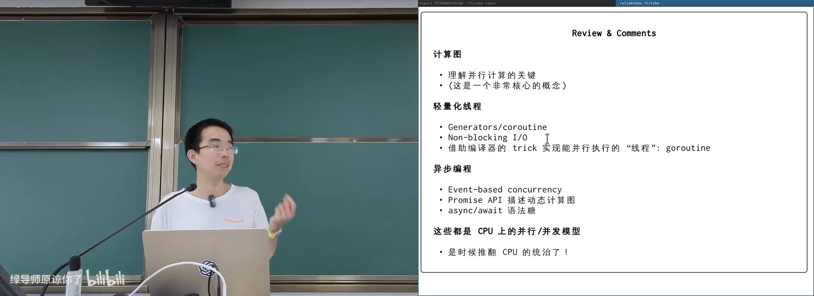
📷 从 CPU 并发模型转向 SIMD 与 GPU
回到原视频 (00:00:20)
1. CPU 的顺序执行只是精心维护的假象
1.1 逻辑门天然并行
(参考时间: 00:02)
从寄存器-指令模型看，CPU 执行 rv32ima_step 时像是一步一步顺序执行。但底层电路并不是串行状态机：
- 信号从输入传播到输出时，不同逻辑门可以同时翻转；
- 多条指令可以同时进入取指和译码阶段；
- 两条指令如果没有数据依赖，理论上可以同时执行；
- 双端口寄存器文件允许同一周期写入两个结果。
现代 CPU 内部有一个很长的指令窗口，并持续进行依赖分析、动态调度、寄存器重命名和乱序执行：
flowchart LR
A["取多条指令"] --> Q["指令队列"]
Q --> D["译码与重命名"]
D --> S["数据流分析"]
S --> R["乱序发射"]
R --> E1["执行单元 1"]
R --> E2["执行单元 2"]
R --> E3["执行单元 N"]
E1 --> C["按序提交"]
E2 --> C
E3 --> C
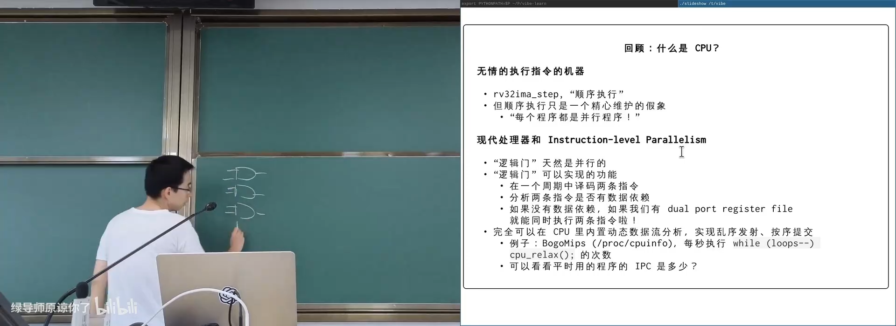
📷 逻辑门构成的电路天生可以并行传播信号
回到原视频 (00:03:30)
1.2 用 IPC 和 BogoMIPS 观察指令级并行
(参考时间: 00:05)
要证明一个 CPU 可以每周期执行超过一条指令，可以结合三类信息：
- 从
/proc/cpuinfo获取处理器型号、频率和 BogoMIPS； - 用汇编构造不同依赖关系的指令序列；
- 用
perf stat统计指令数与周期数，计算 IPC。
IPC = instructions / cycles
实验比较多种序列：
- 连续
add到同一个寄存器，形成长依赖链； - 使用不同寄存器，允许并行发射；
- 整数与浮点混合；
- 使用 NEON / SIMD 指令；
- 独立乘法与加法混合。
BogoMIPS 来自校准循环，数值高于 CPU 标称频率时，往往暗示一个周期内执行了多条简单指令。
flowchart TD
A["读取 CPU 频率"] --> D["估算周期数"]
B["汇编构造指令序列"] --> E["perf 统计 instructions"]
C["记录运行时间"] --> D
D --> F["计算 IPC"]
E --> F
F --> G{"IPC 是否大于 1？"}
G -- "是" --> H["存在指令级并行"]
G -- "否" --> I["可能受依赖或流水线限制"]
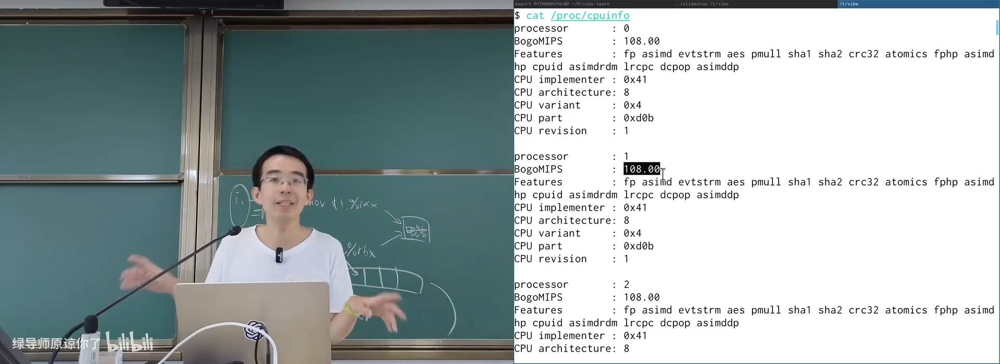
📷 BogoMIPS 与指令计数工具揭示每周期多条指令
回到原视频 (00:07:40)
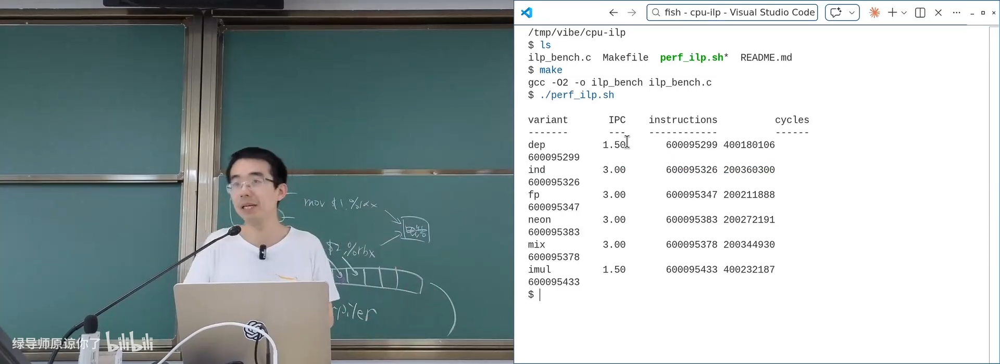
📷 依赖链与独立指令序列产生不同 IPC
回到原视频 (00:12:30)
1.3 为“更快完成”付出的能量税
(参考时间: 00:13)
动态调度非常昂贵。CPU 中必须维护：
- 很长的指令队列；
- 每条指令的数据流信息；
- 寄存器重命名表；
- 乱序发射和按序提交逻辑；
- 分支预测与恢复机制。
这些电路会占用面积，也会持续翻转逻辑门。执行一条简单加法所需的运算电路，可能远小于“决定它何时可以执行”的调度电路。
flowchart LR
A["实际计算"] --> B["少量 ALU 功耗"]
C["指令调度"] --> D["队列 / 重命名 / 依赖分析"]
D --> E["大量额外功耗"]
B --> F["完成一条指令"]
E --> F
单线程性能的代价可以理解为：
为了尽快完成计算，处理器浪费了部分能量；真正用于计算结果的门翻转只是其中一部分。
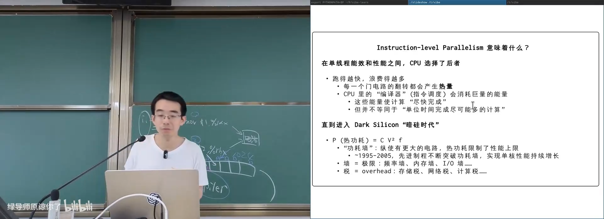
📷 动态调度电路付出了大量额外功耗
回到原视频 (00:15:40)
2. 功耗墙与两条优化路线
2.1 热功耗公式
(参考时间: 00:17)
数字电路动态功耗近似为：
P = C × V² × f
其中：
C：与制程和电路结构相关的等效电容；V：供电电压；f：时钟频率。
在 1995 至 2005 年左右，制程持续进步，晶体管变小，电压降低，频率提高，单核性能快速增长。
当制程红利放缓，C 和 V² 很难继续显著下降，而散热能力有限，处理器就撞上功耗墙。类似的极限还包括：
- 频率墙；
- 内存墙；
- I/O 墙；
- 各种协议、抽象和存储带来的“性能税”。
flowchart TD
A["更先进制程"] --> B["C 与 V 下降"]
B --> C["频率可提升"]
C --> D["单核性能增长"]
D --> E["热功耗上升"]
E --> F["散热达到上限"]
F --> G["功耗墙"]
G --> H["不能继续无成本扩大复杂 CPU"]
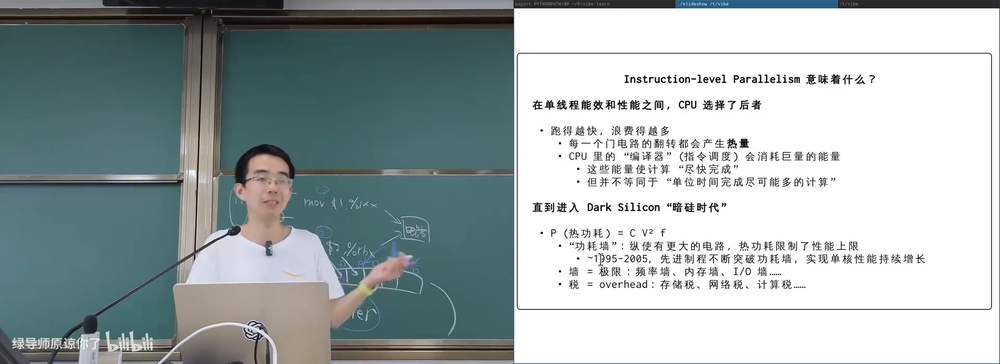
📷 功耗墙限制单核复杂度继续增长
回到原视频 (00:18:40)
2.2 策略一与策略二
(参考时间: 00:21)
面对功耗墙，有两条主要路线：
策略一：让一条指令处理更多数据。
- 调度一条指令的固定成本被多个数据元素分摊；
- 这就是 SIMD，Single Instruction Multiple Data。
策略二：使用更多更简单的处理器。
- 同等面积可以放更多小核心；
- 单核性能下降，但总并行吞吐提高；
- 异构处理器把大核与小核组合，如 ARM big.LITTLE、Intel P-core/E-core。
flowchart TD
A["功耗墙"] --> B["减少每次计算的调度开销"]
A --> C["增加简单执行单元数量"]
B --> D["SIMD"]
C --> E["多核 / 异构 CPU"]
E --> F["继续简化"]
F --> G["GPU / SIMT"]
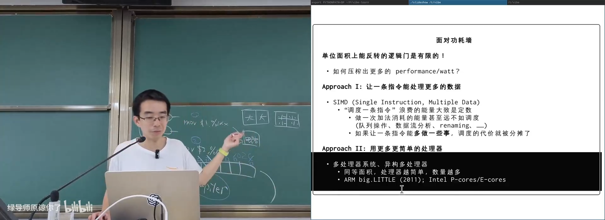
📷 SIMD 与多简单处理器是应对功耗墙的两条路线
回到原视频 (00:22:30)
3. SIMD：一条指令操作多个数据
3.1 Packed register
(参考时间: 00:25)
Intel 在 1997 年推出 MMX：MultiMedia eXtension。
32 位机器新增一组 64 位寄存器，一个寄存器可以看作：
- 2 个 32 位整数；
- 4 个 16 位整数；
- 8 个 8 位整数。
对两个 packed register 做加法，可以同时完成多个小整数的加法：
[a3 a2 a1 a0] + [b3 b2 b1 b0]
= [a3+b3, a2+b2, a1+b1, a0+b0]
这种加法和一个 64 位普通整数加法不同：
- 每个 lane 独立计算；
- lane 之间通常不传播进位；
- 某些指令使用饱和运算，溢出时保留最大或最小值。
flowchart LR
A["64-bit Packed Register A"] --> A0["a0"]
A --> A1["a1"]
A --> A2["a2"]
A --> A3["a3"]
B["64-bit Packed Register B"] --> B0["b0"]
B --> B1["b1"]
B --> B2["b2"]
B --> B3["b3"]
A0 --> C0["a0+b0"]
A1 --> C1["a1+b1"]
A2 --> C2["a2+b2"]
A3 --> C3["a3+b3"]
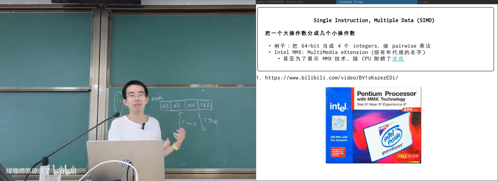
📷 MMX 使用 64 位 packed register 同时处理多个整数
回到原视频 (00:26:30)
3.2 编程中已经在使用 SIMD 思想
(参考时间: 00:28)
Bit set 用一个整数的多个 bit 表示集合：
int present(uint32_t set, int x) {
return (set >> x) & 1;
}
数组版本：
int present(const unsigned char *arr, int x) {
return (arr[x / 8] >> (x % 8)) & 1;
}
另一个经典例子是 popcount：
inline int popcount(uint32_t x) {
x = (x & 0x55555555) + ((x & 0xaaaaaaaa) >> 1);
x = (x & 0x33333333) + ((x & 0xcccccccc) >> 2);
x = (x & 0x0f0f0f0f) + ((x & 0xf0f0f0f0) >> 4);
x = (x & 0x00ff00ff) + ((x & 0xff00ff00) >> 8);
x = (x & 0x0000ffff) + (x >> 16);
return x;
}
它把相邻 bit 的计数逐层合并。但在现代处理器上，这种方法形成的依赖链并不一定比查表更快：
- 把 32 位拆成 4 个 8 位；
- 分别查 256 项表；
- 四个 load 在缓存命中时可并行；
- 最后相加。
“聪明的位运算”不一定比直接查表更适合现代流水线。
flowchart TD
A["popcount(x)"] --> B["按 8 位拆成 4 段"]
B --> C1["table[x & 0xff]"]
B --> C2["table[(x >> 8) & 0xff]"]
B --> C3["table[(x >> 16) & 0xff]"]
B --> C4["table[(x >> 24) & 0xff]"]
C1 --> D["sum"]
C2 --> D
C3 --> D
C4 --> D
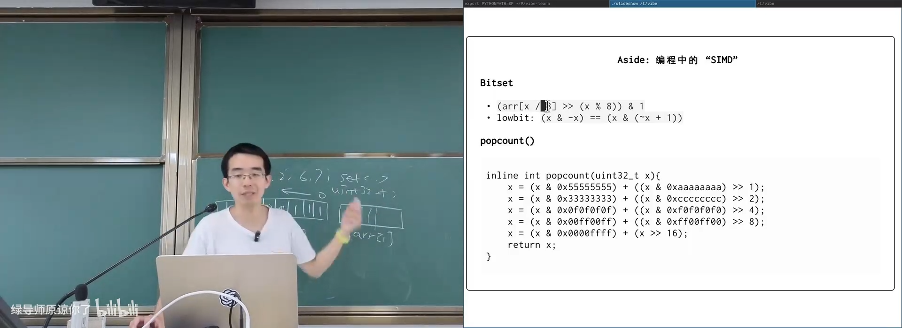
📷 Bitset 与 popcount 展示了多位并行处理思想
回到原视频 (00:29:30)
3.3 从 MMX 到 AVX-512
(参考时间: 00:33)
寄存器宽度持续增长：
64-bit %mm MMX
128-bit %xmm SSE
256-bit %ymm AVX
512-bit %zmm AVX-512
同时增加数据类型和运算：
- 整数与浮点数；
- 三操作数模式；
- shuffle：
c[i] = a[b[i]]； - FMA：
a * b + c一条指令完成。
寄存器越宽，每次动态调度的固定成本就被摊得越薄。但 AVX-512 已接近热密度极限，开启宽向量单元时处理器可能被迫降频。
flowchart LR
A["MMX 64-bit"] --> B["SSE 128-bit"]
B --> C["AVX 256-bit"]
C --> D["AVX-512 512-bit"]
D --> E["调度成本被更多数据分摊"]
D --> F["热密度与降频压力上升"]
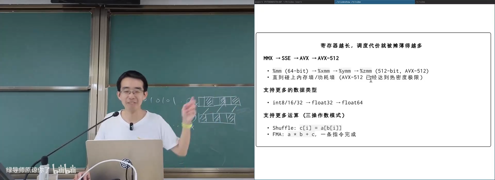
📷 SIMD 寄存器从 MMX 扩展到 AVX-512
回到原视频 (00:34:30)
3.4 SIMD 仍然没有消灭调度成本
(参考时间: 00:36)
SIMD 指令依然：
- 经过缓存层次；
- 参与动态流水线；
- 与其他指令竞争发射槽和功耗；
- 在宽向量执行时产生更高热密度。
真正极端的目标是：
让指令调度的代价接近零。
历史上有一个激进尝试：VLIW，Very Long Instruction Word。
编译器把多条互不依赖的指令打包到一条很宽的超长指令中，硬件只负责执行，不再做复杂动态调度。
flowchart LR
A["普通指令流"] --> B["VLIW 编译器"]
B --> C["超长指令包"]
C --> D["硬件简单译码"]
D --> E["多个执行单元并行"]
F["复杂依赖分析"] --> B
Intel 曾尝试 IA-64，但没有取得市场成功。讲师认为，在编译器和 LLM 能力增强后，VLIW 思想可能在特定加速器上重新变得有吸引力。
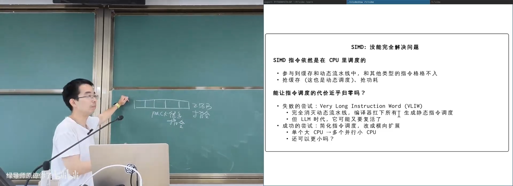
📷 VLIW 把动态调度交给编译器
回到原视频 (00:38:30)
4. 改变人类命运的另一条时间线：图形处理器
4.1 图形计算天然适合并行
(参考时间: 00:41)
Magnavox Odyssey（1972）是早期游戏主机。到 1983 年，NES 已经能提供流畅动画和丰富场景。
NES 使用 MOS 6502，主频约 1.79 MHz，IPC 约 0.43。屏幕为 256 × 240，共约 61K 像素，目标 60 FPS。
直接为每个像素计算颜色需要极多指令：
for (int y = 0; y < H; ++y) {
for (int x = 0; x < W; ++x) {
putchar(f(x, y) ? '*' : ' ');
}
putchar('\n');
}
f(x, y) 对每个像素相互独立，是 embarrassingly parallel 任务。但早期 CPU 没有足够并行能力。
flowchart TD
A["场景描述"] --> B["渲染硬件"]
B --> C1["像素 (0,0)"]
B --> C2["像素 (0,1)"]
B --> C3["像素 (x,y)"]
C1 --> D["帧缓冲"]
C2 --> D
C3 --> D
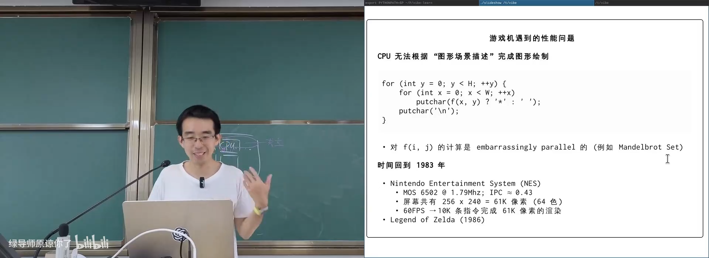
📷 早期游戏机通过专用硬件完成像素级并行渲染
回到原视频 (00:42:30)
4.2 NES 的场景描述数据结构
(参考时间: 00:44)
NES 不要求 CPU 逐像素绘制，而是让 CPU 生成一份“场景描述”：
- 以
8 × 8tile 为基本单位； - Tile ROM 保存图形模式；
- Tile Map / Name Table 决定背景拼接；
- Attribute Table 决定调色板；
- Sprite 表示可自由移动的前景。
一个 tile 往往只有 4 种颜色，可以用 2 bit/像素表示，极大节省 ROM 和显存。
同一套 tile 可以通过不同 palette 复用。例如马里奥和路易吉可能共享像素图案，只是换调色板后变成红色或绿色。
flowchart LR
A["CPU"] --> B["场景描述"]
B --> C["Background Tile Map"]
B --> D["Attribute / Palette"]
B --> E["Sprite RAM"]
C --> F["PPU"]
D --> F
E --> F
F --> G["扫描线输出"]
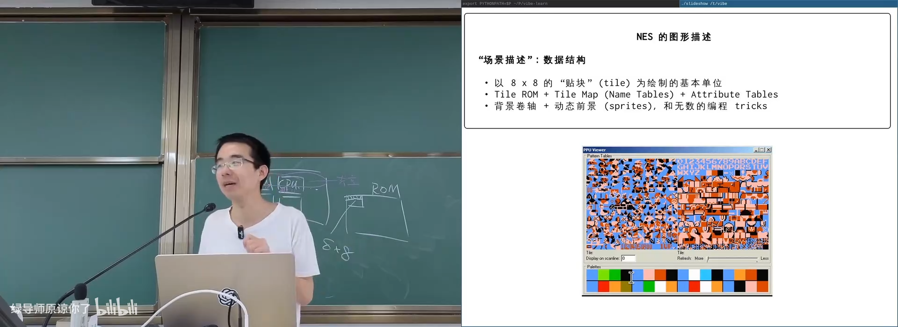
📷 NES 用 tile map、调色板和 sprite 描述场景
回到原视频 (00:46:30)
4.3 Sprite 与编程 trick
(参考时间: 00:48)
每个 Sprite 可用一条紧凑记录描述：
(x, y, tile, attribute)
其中 attribute 包含：
- 调色板编号；
- 前后景优先级；
- 水平翻转；
- 垂直翻转。
Sprite RAM 通常只能保存 64 个 Sprite。开发者利用镜像、调色板和两次动画帧制造复杂效果：
- 一个 tile 通过水平和垂直翻转组合成圆；
- 马里奥中的敌人用两只脚交换位置形成走路动画；
- 背景滚动通过移动可显示窗口并替换新 tile 完成；
- 全屏闪烁通过替换调色板实现，而不改动 tile 数据。
flowchart TD
A["Sprite 原始 tile"] --> B["水平翻转"]
A --> C["垂直翻转"]
A --> D["水平 + 垂直翻转"]
B --> E["复用有限图形资源"]
C --> E
D --> E
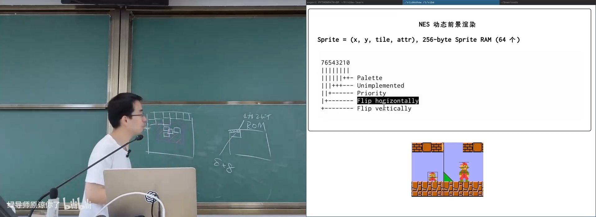
📷 Sprite 属性通过翻转与调色板复用图形资源
回到原视频 (00:49:30)
4.4 固定功能渲染管线
(参考时间: 00:51)
可以把 NES 的 PPU 理解为一台小型“GPU”：
- 有一个线扫描计数器；
- 对当前扫描线上的像素读取背景 tile；
- 查询所有 Sprite 是否覆盖该像素；
- 按优先级选择最上层的颜色；
- 将结果送到显示输出。
这与今天的 z-buffer 思想相通：越靠前的图层覆盖越靠后的图层。
flowchart TD
A["扫描线 row"] --> B["计算背景颜色"]
B --> C["遍历 Sprite"]
C --> D{"Sprite 覆盖当前像素？"}
D -- "否" --> E["保留当前颜色"]
D -- "是" --> F{"优先级更高？"}
F -- "是" --> G["覆盖颜色"]
F -- "否" --> E
E --> H["输出像素"]
G --> H
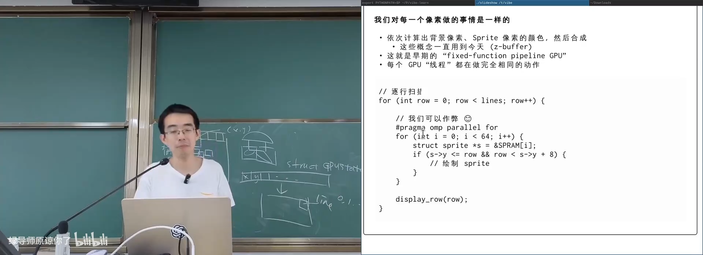
📷 PPU 对每个像素执行背景与 Sprite 合成
回到原视频 (00:52:30)
5. 从 2D 到 3D，再到可编程 Shader
5.1 贴图是可变形的数据块
(参考时间: 00:54)
随着硬件能力增强，场景描述不再局限于固定 tile。可以使用任意 bitmap：
bitmap + 四个顶点位置
把贴图四个角移动到不同位置，就相当于拉扯一张有弹性的纸，从而完成：
- 放大；
- 缩小；
- 旋转；
- 仿射变形；
- 图层拼接。
flowchart LR
A["Bitmap Texture"] --> B["移动四个顶点"]
B --> C["仿射变换"]
C --> D["Pixel Shader 采样"]
D --> E["写入画布"]
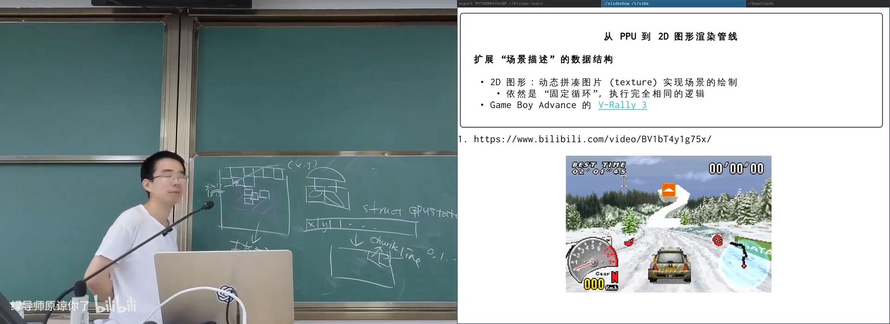
📷 贴图通过顶点映射实现缩放、旋转和裁剪
回到原视频 (00:55:30)
5.2 2D 引擎模拟 3D 的失真
(参考时间: 00:58)
早期掌机常用 2D 贴图模拟 3D 赛道。背景和前景根据摄像机位置缩放，就可以制造透视效果。
但如果只把矩形挤压成梯形，缺少真实的深度信息，贴图会产生 affine distortion。摄像机转动幅度过大时，失真就会暴露。
flowchart TD
A["2D 贴图"] --> B["挤压成梯形"]
B --> C["看起来像透视"]
C --> D["缺少深度插值"]
D --> E["大角度旋转时穿帮"]
📷 二维贴图模拟三维透视会产生视觉失真
回到原视频 (00:58:30)
5.3 齐次坐标把 3D 变换统一为矩阵乘法
(参考时间: 01:00)
3D 场景描述包含：
- Vertex；
- Face；
- Texture；
- Material；
- Light；
- Camera。
三角形是基本图元。平移、旋转、缩放和摄像机投影都可以写成 4D 齐次坐标下的矩阵乘法：
[x' y' z' 1] = [x y z 1] × M
这样 GPU 只需要对每个顶点执行相同的矩阵运算。
flowchart LR
A["3D Vertex"] --> B["Model Matrix"]
B --> C["World Space"]
C --> D["View Matrix"]
D --> E["Camera Space"]
E --> F["Projection"]
F --> G["Screen Space"]
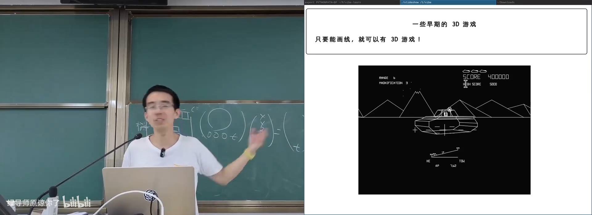
📷 齐次坐标把平移、旋转和投影统一为矩阵运算
回到原视频 (01:01:30)
5.4 Vertex Shader
(参考时间: 01:03)
既然每个顶点执行相同步骤，就可以让程序员提供一段程序：
void main() {
gl_Position = transform(position);
this.xy += wave_offset(this.xy, time);
}
Vertex Shader 可以修改顶点坐标、颜色和法线。典型应用包括：
- 水面波纹；
- 头发和布料摆动；
- 植被随风晃动；
- 顶点级动画。
flowchart TD
A["顶点数据"] --> B["Vertex Shader"]
B --> C["修改坐标"]
B --> D["修改颜色"]
B --> E["修改法线"]
C --> F["光栅化"]
D --> F
E --> F
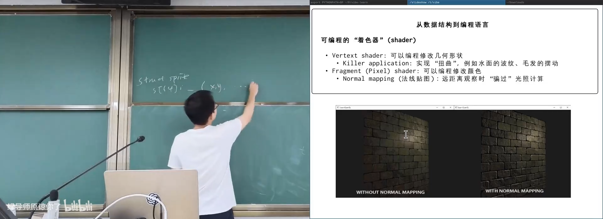
📷 Vertex Shader 对每个顶点运行并修改几何形状
回到原视频 (01:04:30)
5.5 Fragment / Pixel Shader
(参考时间: 01:07)
光栅化后，每个像素会执行 Fragment Shader：
vec3 shade(vec2 uv, vec3 color) {
color *= 0.9;
return color;
}
它本质上是对每个像素做相同的数值处理，类似照片编辑：
- 调整曝光；
- 调整亮部和暗部；
- 使用 mask 局部修改；
- 应用滤镜。
flowchart LR
A["Fragment: xy + rgb"] --> B["读取贴图 / 法线"]
B --> C["计算光照 / 颜色"]
C --> D["输出像素颜色"]
E["Mask / Uniform"] --> C
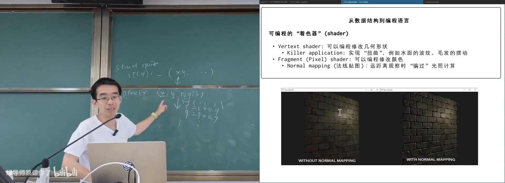
📷 Fragment Shader 对每个像素执行相同的颜色计算
回到原视频 (01:08:30)
5.6 Normal mapping
(参考时间: 01:09)
真实砖墙的缝隙和凸起需要大量三角面。Normal mapping 不增加几何细节，而是为每个像素保存一个法线方向。
光照计算使用入射光与法线的内积：
shade = max(0, dot(light_direction, normal))
当法线随砖缝起伏时，光照也会变化，从远处看就像真实凹凸表面。
它的限制是：
- 只能欺骗光照；
- 不能产生真实遮挡；
- 视角非常近时会穿帮。
flowchart TD
A["平面多边形"] --> B["Normal Map"]
B --> C["每像素法线"]
C --> D["Light · Normal"]
D --> E["局部明暗变化"]
E --> F["近似凹凸表面"]
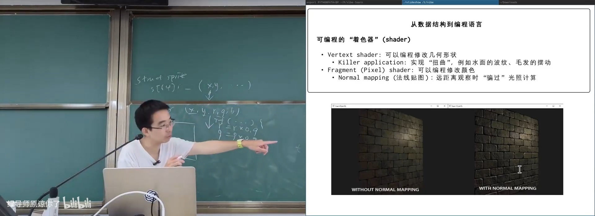
📷 Normal map 在不增加多边形的情况下模拟凹凸光照
回到原视频 (01:10:30)
6. GPGPU：把通用计算伪装成图形
6.1 用图形硬件做矩阵乘法
(参考时间: 01:11)
2001 年的论文 Fast matrix multiplies using graphics hardware 提出：
把科学计算问题转换成图像处理问题，再交给可编程 Shader 执行。
矩阵乘法可以分解为外积之和：
AB = Σ A[:,k] B[k,:]
每一步外积结果都是一个矩阵，可以当作一张图像；多个外积结果再用 Fragment Shader 叠加。
flowchart LR
A["矩阵 A 的第 k 列"] --> C["外积"]
B["矩阵 B 的第 k 行"] --> C
C --> D["生成一张矩阵图像"]
D --> E["Pixel Shader 累加"]
E --> F["矩阵乘法结果"]
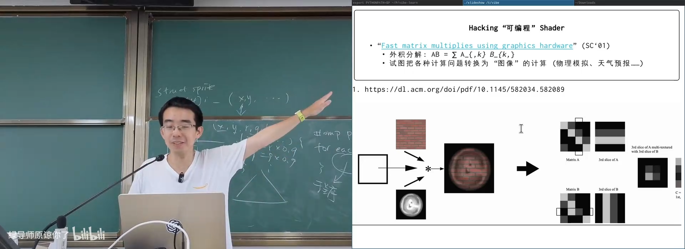
📷 GPGPU 早期把矩阵乘法转换为图像叠加
回到原视频 (01:12:30)
6.2 Shader Program 就是为大量对象执行同一段代码
(参考时间: 01:14)
Shader 的本质可以重新表述为：
for_each(element) {
execute_same_kernel(element);
}
这正是并发编程最初讲的内容：为大量节点执行相同计算。
假设要为每个像素计算 Mandelbrot 颜色：
__device__ int *screen;
void T_kernel(int row, int col) {
int color = f(row, col);
screen[row * 1920 + col] = color;
}
for (int row = 0; row < 1080; ++row) {
for (int col = 0; col < 1920; ++col) {
spawn(T_kernel, row, col);
}
}
如果 GPU 能启动约 200 万个轻量线程并让他们并行执行，就得到了通用 GPU 计算模型。
flowchart TD
A["输入元素集合"] --> B["同一个 Kernel"]
B --> C1["元素 0"]
B --> C2["元素 1"]
B --> C3["元素 N"]
C1 --> D["设备内存结果"]
C2 --> D
C3 --> D
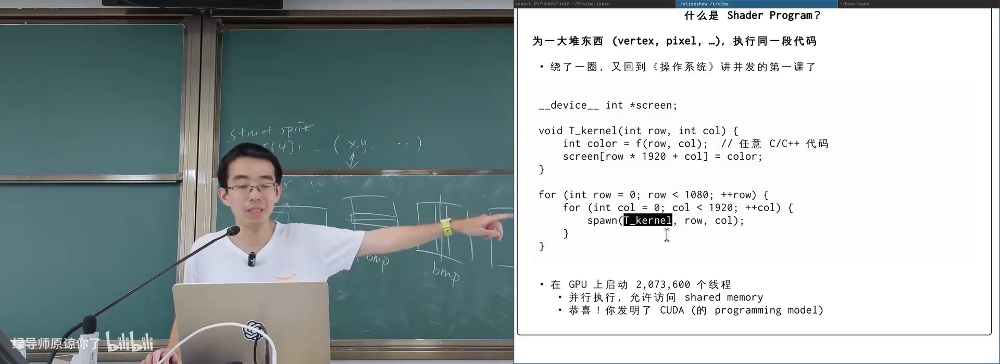
📷 Shader 与 CUDA Kernel 都是对大量元素执行同一段代码
回到原视频 (01:15:30)
7. CUDA：为海量线程设计的执行模型
7.1 Kernel 与设备内存
(参考时间: 01:16)
CUDA 给 C/C++ 增加了一些关键字：
__device__ int *screen;
__global__ void mandelbrot_kernel(int width) {
int col = blockIdx.x * blockDim.x + threadIdx.x;
int row = blockIdx.y * blockDim.y + threadIdx.y;
if (col < width)
screen[row * width + col] = mandelbrot(row, col);
}
mandelbrot_kernel<<<blocks, threads>>>(width);
看似奇怪的 <<<...>>> 实际上只是描述：
- 启动多少线程；
- 如何把线程组织成 block；
- kernel 该如何获得自己的坐标。
flowchart TD
A["CPU 准备输入"] --> B["拷贝到 Device Memory"]
B --> C["启动 Kernel Grid"]
C --> D["多个 Block"]
D --> E["每个 Block 多个 Thread"]
E --> F["Kernel 计算"]
F --> G["结果写回 Device Memory"]
G --> H["读取回 CPU"]
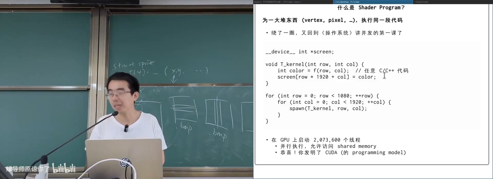
📷 CUDA 通过 kernel 和线程索引表达像素级并行
回到原视频 (01:17:30)
7.2 为什么不能直接创建两百万个普通线程
(参考时间: 01:17)
如果每个线程都占用用户栈、内核对象、寄存器和完整调度状态，创建 200 万线程不可接受。
GPU 仍保留每个线程的：
- 寄存器；
- ALU / 运算能力；
- 必要状态。
但可以共享：
- 程序计数器；
- 取指单元；
- 译码单元；
- 控制逻辑。
flowchart LR
A["每个线程必需的 ALU"] --> D["多个执行单元"]
B["每个线程必需的寄存器"] --> D
C["共享 PC / 取指 / 译码"] --> D
D --> E["SIMT 执行"]
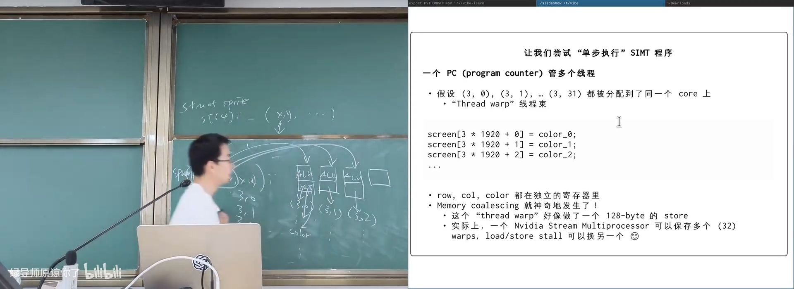
📷 SIMT 保留寄存器与运算器，共享取指译码
回到原视频 (01:19:30)
8. SIMT：单指令多线程
8.1 Thread warp
(参考时间: 01:20)
NVIDIA GPU 把 32 个线程组成一个 warp：
Thread warp = 32 threads
同一个 warp 中的线程：
- 执行同一条指令；
- 共享一个 Program Counter；
- 拥有独立寄存器；
- 可以拥有不同的坐标与数据。
例如线程 (3,0)、(3,1) 一直到 (3,31) 被分到同一个 warp：
screen[3 * 1920 + 0] = color_0;
screen[3 * 1920 + 1] = color_1;
...
screen[3 * 1920 + 31] = color_31;
对硬件来说，这像是一条跨 32 个连续地址的宽 store。
flowchart LR
PC["单个 Program Counter"] --> I["同一条指令"]
I --> R0["Thread 0 寄存器"]
I --> R1["Thread 1 寄存器"]
I --> R31["Thread 31 寄存器"]
R0 --> S["连续宽 Store"]
R1 --> S
R31 --> S
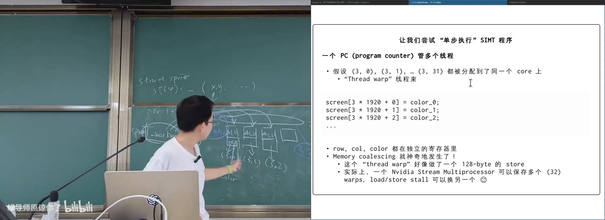
📷 一个 warp 共享 PC，但每个线程拥有独立寄存器
回到原视频 (01:22:30)
8.2 Memory coalescing
(参考时间: 01:24)
假设 32 个线程分别写：
screen[row * 1920 + col] = color;
如果 col 连续，32 个 4 字节写可以组成一次 128 字节连续访问，内存控制器能高效完成。
如果把索引改成转置形式：
screen[row + col * 1080] = color;
每个线程访问的地址就会跳跃，硬件不得不发出大量零散事务，性能可能大幅下降。
flowchart TD
A["32 threads"] --> B{"地址是否连续？"}
B -- "是" --> C["合并为 128-byte transaction"]
C --> D["高带宽"]
B -- "否" --> E["32 个分散地址"]
E --> F["多次内存事务"]
F --> G["性能显著下降"]
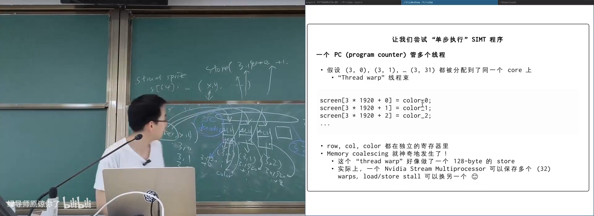
📷 连续索引形成 coalesced 访问，转置索引导致分散访问
回到原视频 (01:25:00)
8.3 用更多 warp 隐藏延迟
(参考时间: 01:26)
一个 Stream Multiprocessor 可以保存多个 warp。当某个 warp 等待全局内存时，调度器切换到另一个可运行 warp。
它不是用复杂的乱序执行隐藏延迟，而是用大量线程提供并行度：
flowchart LR
W1["Warp 1: load stall"] --> S["Warp Scheduler"]
W2["Warp 2: ready"] --> S
W3["Warp 3: ready"] --> S
S --> E["执行可运行 warp"]
E --> W1
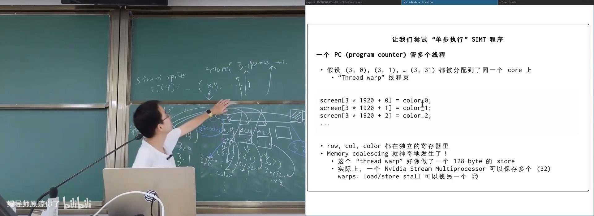
📷 Stream Multiprocessor 在多个 warp 之间切换隐藏内存延迟
回到原视频 (01:26:30)
8.4 分支分歧
(参考时间: 01:27)
一个 warp 只有一个 Program Counter，那么 if/else 如何执行？
真实硬件通常使用谓词或 lane mask：
if (condition)
A();
else
B();
编译结果近似：
计算 condition
禁用 condition == false 的 lanes
执行 A
禁用 condition == true 的 lanes
执行 B
重新启用全部 lanes
如果 warp 中线程走向不同分支，两条路径都要串行执行。这叫 branch divergence。
flowchart TD
A["warp 计算 condition"] --> B["mask lane A"]
B --> C["执行 if 分支"]
C --> D["mask lane B"]
D --> E["执行 else 分支"]
E --> F["合并 lanes"]
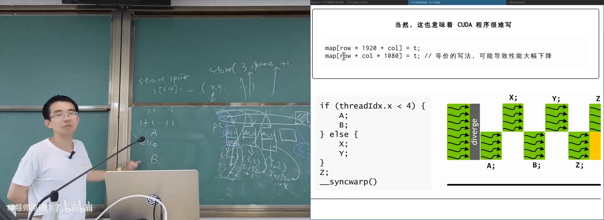
📷 SIMT 通过 lane mask 串行执行分歧分支
回到原视频 (01:28:30)
9. GPU 性能案例：Mandelbrot Set
(参考时间: 01:29)
课程比较了 25600 × 25600 的 Mandelbrot 渲染：
- Ryzen 5 9600X：约 25.1 s，65 W；
- RTX 4060 Ti 16 GB：约 6.1 s，42 W。
即使 Mandelbrot 的迭代次数不固定，导致同一个 warp 中可能产生分支分歧，GPU 仍然显著领先。
flowchart LR
A["CPU: 25.1 s / 65 W"] --> C["相同图像"]
B["GPU: 6.1 s / 42 W"] --> C
C --> D["GPU 更适合高并行数值计算"]
E["不固定 while 循环"] --> F["branch divergence"]
F --> B
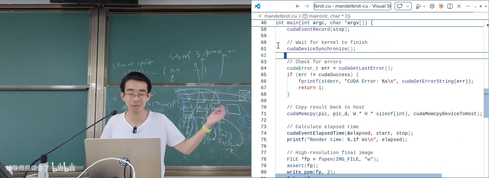
📷 GPU 在高并行数值计算中显著领先 CPU
回到原视频 (01:29:20)
CUDA 代码在原 C 版本基础上，主要只需要：
- 给计算函数增加
__device__/__global__； - 用
blockIdx、blockDim、threadIdx计算像素坐标； - 把循环拆成线程网格。
这说明 CUDA 的核心并不是神秘语言，而是：
另一种启动几十万到数百万轻量级线程的机制。
10. 总结：用架构选择换取单位功耗的算力
CPU 通过复杂的动态调度获得单线程性能，但需要付出面积和功耗。功耗墙出现后，芯片设计走向两类变化：
- 让一条指令处理更多数据，即 SIMD；
- 使用更多更简单的执行单元，最终发展为 GPU/SIMT。
图形计算的历史推动了这一转变：
- 早期游戏机使用固定场景描述和专用渲染硬件；
- 2D 引擎逐步扩展为 texture 和 3D 变换；
- Shader 把渲染流程变成可编程程序；
- GPGPU 把通用计算映射为图像计算；
- CUDA 把 GPU 抽象成可启动海量线程的通用计算平台；
- SIMT warp 共享 PC 和译码，保留独立寄存器，取得极高能效；
- 连续内存访问与分支行为决定 CUDA 程序性能。
flowchart LR
A["复杂 CPU"] --> B["功耗墙"]
B --> C["SIMD"]
B --> D["更多简单核心"]
D --> E["固定功能 GPU"]
E --> F["可编程 Shader"]
F --> G["GPGPU"]
G --> H["CUDA / SIMT"]
H --> I["海量线程与高能效并行"]
人类需求持续推动技术演进：从游戏图形到科学计算，再到人工智能。GPU 从领域加速器逐渐变得通用，而 CUDA 最终在 AI 时代获得了远超最初预期的成功。
附：官方参考与延伸阅读
- mini-rv32ima 模拟器
- mini-rv32ima 项目
- 指令级并行实验
- MMX 手册
- MMX 游戏演示
- Fast matrix multiplies using graphics hardware
- OpenGL Shader 实验
- NVIDIA Fermi 白皮书
- CUDA Mandelbrot Set
- V-Rally 3 图形技术演示
官方课程资料：
版权与署名：本讲课程材料由蒋炎岩（jyy）编写。课程讲义与幻灯片采用 Creative Commons BY-NC 4.0 许可；本电子书保留课程出处、作者署名与许可说明。